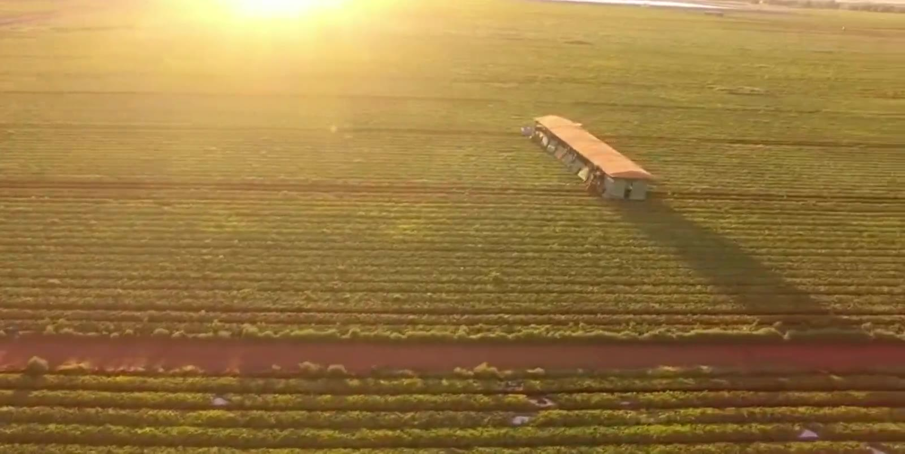
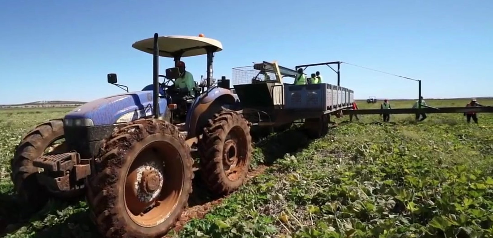
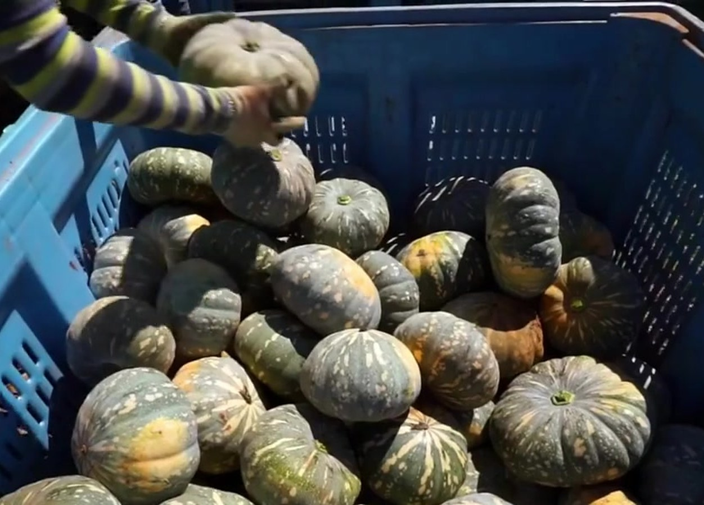
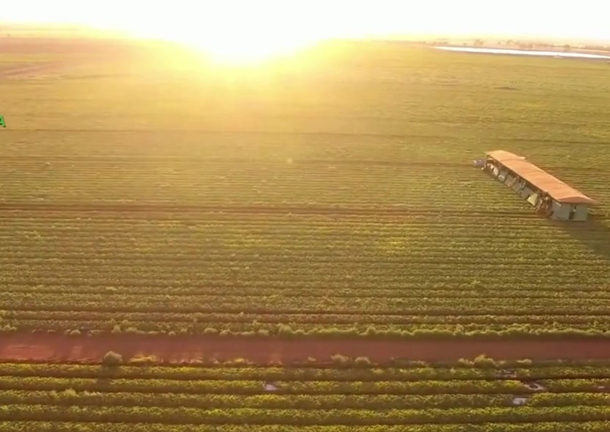
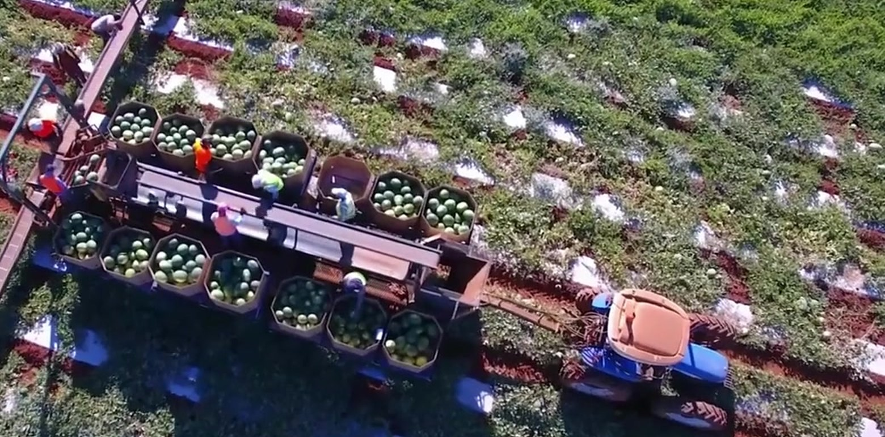
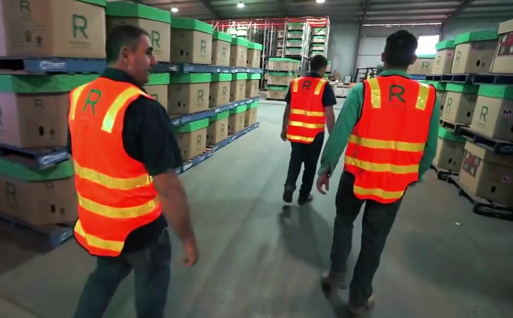
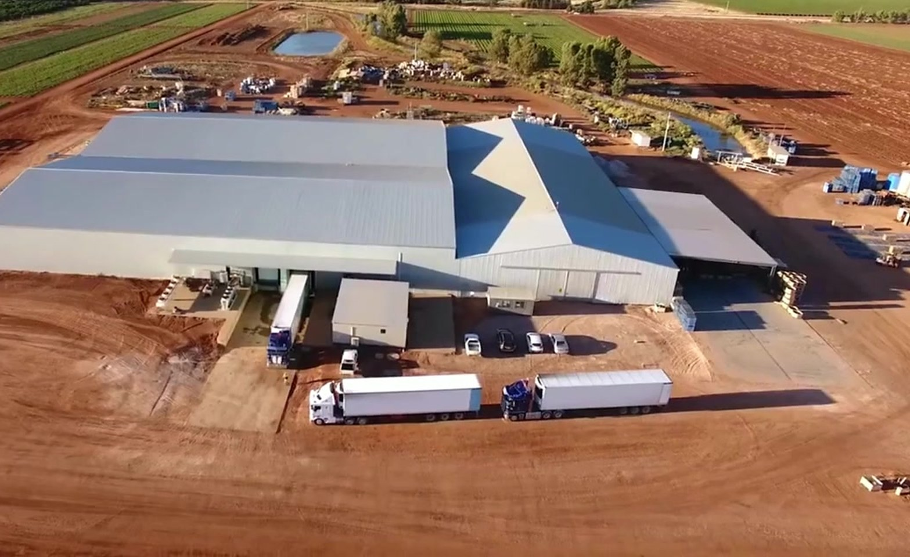
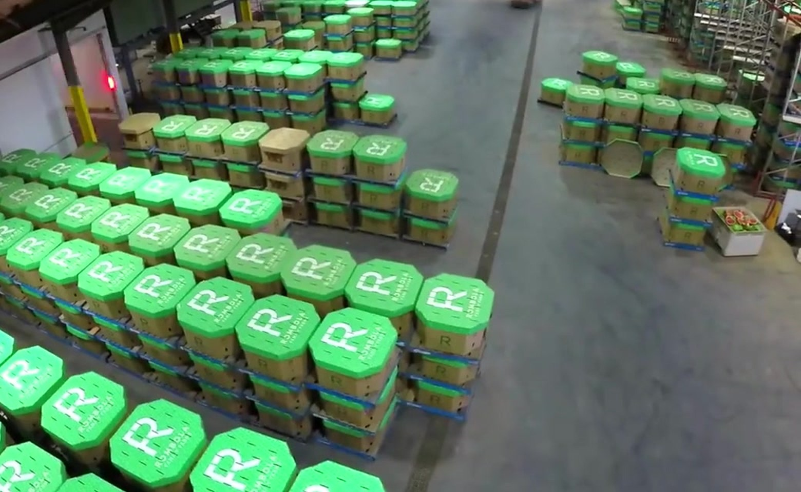
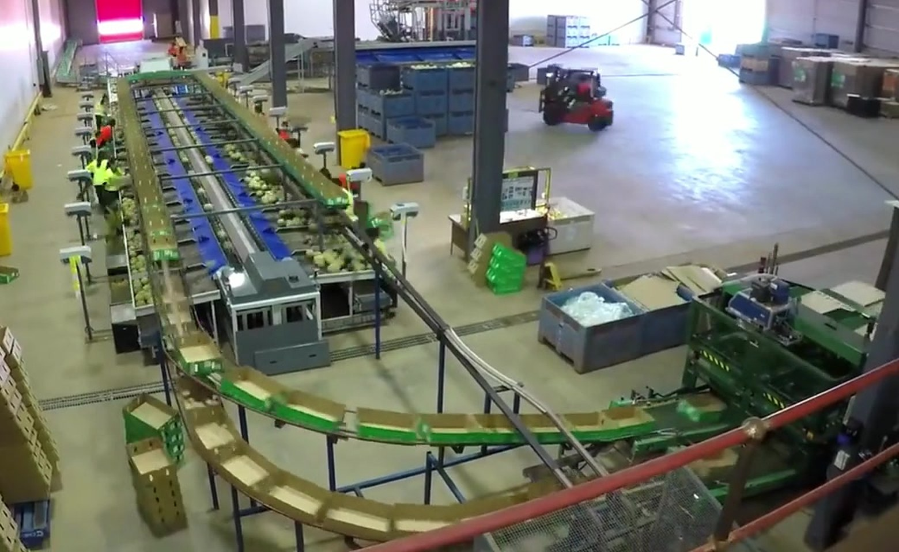

Harvested year-round
Seedless watermelon
Mini personal melons at 1.5 to 2.5 kg, and standard seedless from 3 to 15 kg depending on variety.
Australian family farming; growing food & community.

Riverina NSW and Mataranka NT
Seedless watermelon, rockmelons, honeydew, pumpkin and broccoli, grown across the Riverina and the Northern Territory and supplied to every Australian capital city.
4,000+
hectares of horticultural land across NSW and the Northern Territory
300+
seasonal contract employees
50+
years of family farming
All
Australian capital cities supplied
Our story
The Rombola family came to Australia from Calabria, Italy, as part of a large group of migrants who helped transform the Riverina into a productive agricultural region.
Today the business grows melons, pumpkin, broccoli and citrus across more than 4,000 hectares in New South Wales and the Northern Territory, supplying fresh produce under two flagship brands: Rombola Family Farms and Green Gro.
We are proud to be in the fresh produce business!

Our produce
Temperature-controlled trucks collect our produce daily from major distribution locations across Australia.
Mini personal melons at 1.5 to 2.5 kg, and standard seedless from 3 to 15 kg depending on variety.
Several varieties, each with its own flavour, shape and flesh colour.
Grown in different varieties, at around 1.8 to 3.6 kg.
Two popular varieties, grown for kitchens across the country.
Harvested from April to October.
Also in the range
Talk to the team about supply across the Rombola range.
Seasonal produce chart
Harvest windows for butternut pumpkin, pumpkin and watermelon in Bundaberg, QLD.

Pumpkin
Where we grow
Low-lying flood plains, a warm to hot climate and irrigation water from the Murrumbidgee River. Our NSW growing is centred on the Murrumbidgee Irrigation Area.
A small town on the Roper River, with a sub-tropical climate and distinct wet and dry seasons.
On the ground
Harvest crews in the paddock, grading lines in the shed and trucks on the road.





Our values
Ensuring our world's food source is long lasting using the best agricultural practices.
Growing only the best produce and providing high-quality services.
Taking responsibility for our social, environmental and ethical operations, and building a diverse, rewarding workplace.
Using knowledge and technology to improve horticulture, in a culture of innovation and excellence.
Communicating openly and honestly, and welcoming feedback.
Recognising our influence on consumers and stakeholders, and aiming for excellence in all areas.
Get in touch
Supply questions, careers and general enquiries all start with the team.